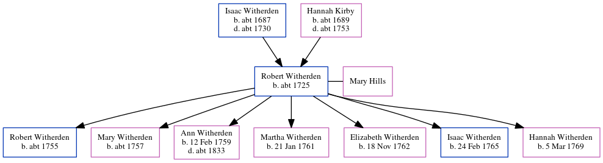

Mary Witherden 1760 -
[ Home ] | [ Calendar ] | [ Surnames Index ] | [ Errors ] | [ Family History ]The 2nd of 4 children of Kirby Witherden and Sarah Beake, Mary Witherden, the first cousin six-times-removed on the father's side of Nigel Horne, was born on 17 Oct 17601,2 and baptised in St Peters, Thanet, Kent, England on 6 Nov 1760.
Parents
- Kirby was born c. 1723
Citations
- England Births & Baptisms 1538-1975 - Findmypast
- Kent, Canterbury Archdeaconry Baptisms - Findmypast
Media
England Births & Baptisms 1538-1975 - R_941834080
Kent, Canterbury Archdeaconry baptisms 1538-1912 - GBPRS/CANT/B/96344864
Family Tree
Map
Generated by ged2site. Last updated on Jul 3, 2024
Known Issues
Date of birth is known, but not place